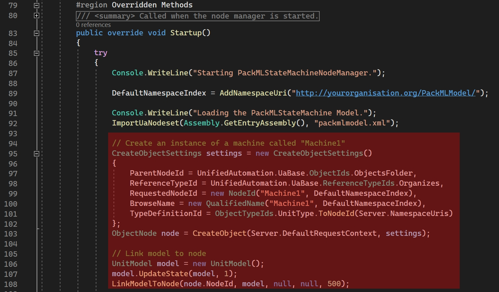

- Open PackMLStateMachineNodeManager.cs in Visual Studio
- Develop the Overridden Methods region
- Develop the Startup() method
- Note: By default the server already creates an instance called "Machine1"
- To remove this default instance, remove the code starting from the comment "// Create an instance of a machine called "Machine1" until LinkModelToNode(node.NodeId, model, null, null, 500); See image below (in red, the code to remove):
- To add another instance, copy the code in comment starting from "// Create an instance of a machine called "MachineInstance""
- Paste the code above the comment
- In the code you copied, replace all "MachineInstance" by the name of your machine
- Note: The initial state of the machine will be "IDLE", you can change the initial state of the machine by changing the "1" to another integer in ...Model.UpdateState(..Model, 1) (See the list of possible values here)
- You can create as much instance as needed
- You will find an example below with 2 machines: PrinterPaper and Printer3D
